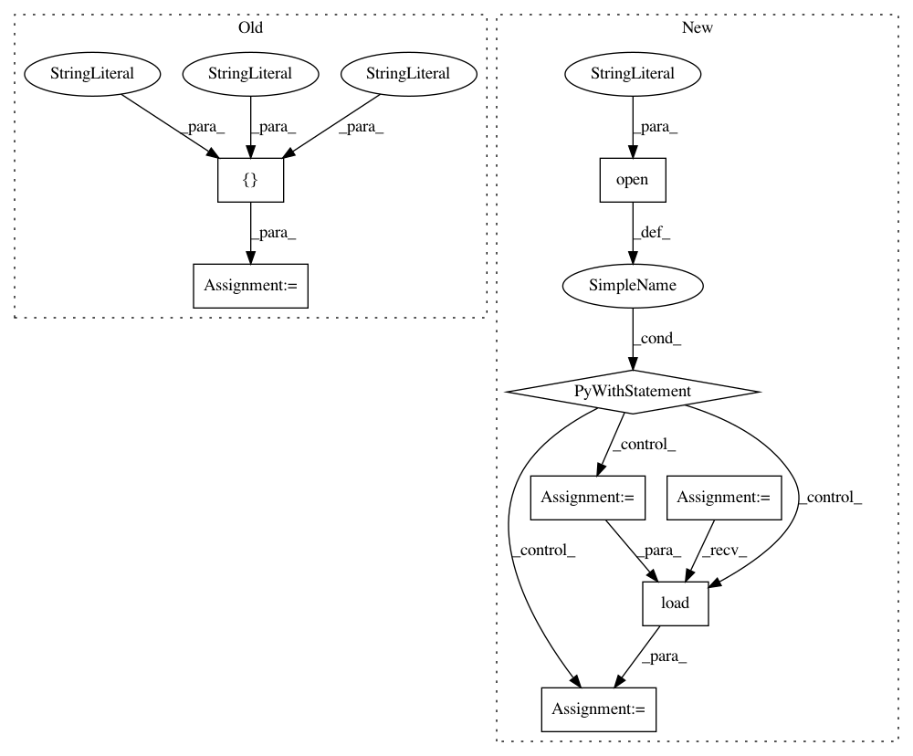

ade52a2d1afe22bdff0ac28b65e5b5cfdd03dd44,pynets/utils.py,,collect_pandas_df,#Any#Any#Any#Any#Any#Any#,816
Before Change
warnings.filterwarnings("ignore")
from pynets.utils import collect_pandas_df_make, flatten
func_models = ["corr", "sps", "cov", "partcorr", "QuicGraphicalLasso", "QuicGraphicalLassoCV",
"QuicGraphicalLassoEBIC", "AdaptiveQuicGraphicalLasso"]
struct_models = ["csa", "tensor", "csd"]
net_pickle_mt_list = list(flatten(net_pickle_mt_list))
After Change
from pynets.utils import collect_pandas_df_make, flatten
// Available functional and structural connectivity models
with open("%s%s" % (str(Path(__file__).parent), "/runconfig.yaml"), "r") as stream:
hardcoded_params = yaml.load(stream)
try:
func_models = hardcoded_params["available_models"]["func_models"]
except KeyError:
print("ERROR: available functional models not sucessfully extracted from runconfig.yaml")
try:
struct_models = hardcoded_params["available_models"]["struct_models"]
except KeyError:
print("ERROR: available structural models not sucessfully extracted from runconfig.yaml")
net_pickle_mt_list = list(flatten(net_pickle_mt_list))
if multi_nets is not None:
net_pickle_mt_list_nets = net_pickle_mt_list
In pattern: SUPERPATTERN
Frequency: 3
Non-data size: 8
Instances
Project Name: dPys/PyNets
Commit Name: ade52a2d1afe22bdff0ac28b65e5b5cfdd03dd44
Time: 2019-07-02
Author: dpisner@utexas.edu
File Name: pynets/utils.py
Class Name:
Method Name: collect_pandas_df
Project Name: ijmarshall/robotreviewer
Commit Name: ff45642295b7878815bced1d4ed76e79fe90d2f0
Time: 2020-04-27
Author: mail@ijmarshall.com
File Name: robotreviewer/robots/bias_ab_robot.py
Class Name: BiasAbRobot
Method Name: __init__
Project Name: dPys/PyNets
Commit Name: ade52a2d1afe22bdff0ac28b65e5b5cfdd03dd44
Time: 2019-07-02
Author: dpisner@utexas.edu
File Name: pynets/utils.py
Class Name:
Method Name: build_omnetome